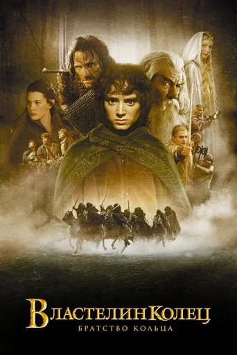

Властелин колец: Братство кольца 2001
Сказания о Средиземье — это хроника Великой войны за Кольцо, длившейся не одну тысячу лет. Тот, кто владел Кольцом, получал неограниченную власть, но был обязан служить злу. Тихая деревня, где живут хоббиты. Придя на 111-й день рождения к своему старому другу Бильбо Бэггинсу, волшебник Гэндальф начинает вести разговор о кольце, которое Бильбо нашел много лет назад. Это кольцо принадлежало когда-то темному властителю Средиземья Саурону, и оно дает большую власть своему обладателю. Теперь Саурон хочет вернуть себе власть над Средиземьем. Бильбо отдает Кольцо племяннику Фродо, чтобы тот отнёс его к Роковой Горе и уничтожил.
Открыть в каталогеДанные и постеры принадлежат их правообладателям. Этот продукт использует TMDB API, но не одобрен и не сертифицирован TMDB.